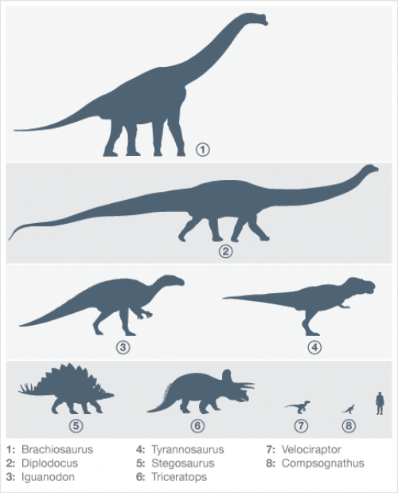

- Definition
- Classification
- Biology
- 한국어 페이지
Biology

- Size
- Largest and smallest
- Behavior
- Communication
- Reproductive biology
- Physiology
Knowledge about dinosaurs is derived from a variety of fossil and non-fossil records, including fossilized bones, feces, trackways, gastroliths, feathers, impressions of skin, internal organs and soft tissues. Many fields of study contribute to our understanding of dinosaurs, including physics (especially biomechanics), chemistry, biology, and the Earth sciences (of which paleontology is a sub-discipline).[61][62] Two topics of particular interest and study have been dinosaur size and behavior.